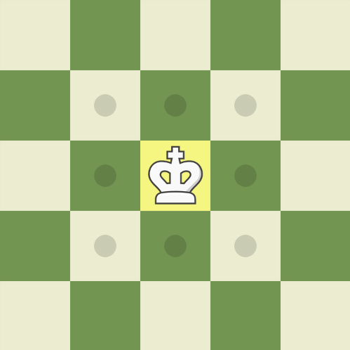
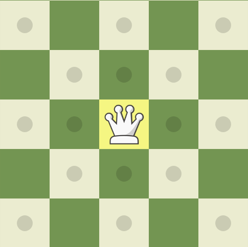
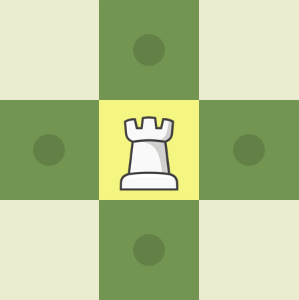
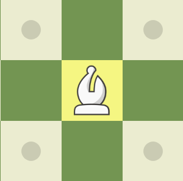
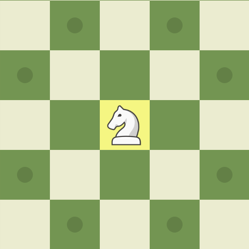

O xadrez é um jogo de estratégia disputado entre dois jogadores, cada um com 16 peças, totalizando 32 peças no tabuleiro. Cada peça tem movimentos específicos e desempenha um papel fundamental na partida.
O rei é a peça mais importante do xadrez. Ele pode se mover uma casa em qualquer direção (horizontal, vertical ou diagonal). No entanto, não pode se deslocar para uma casa que esteja sob ataque do adversário. Se o rei estiver em xeque (ameaçado de captura) e não houver nenhuma jogada para salvá-lo, ocorre o xeque-mate, encerrando a partida. Como peça, o rei não é muito poderoso ofensivamente, mas precisa ser protegido a todo custo.
A rainha é a peça mais poderosa do jogo, combinando os movimentos da torre e do bispo. Ela pode se deslocar quantas casas quiser em linha reta (horizontal ou vertical) e diagonalmente. Graças à sua mobilidade, a rainha é essencial para ataques e controle do tabuleiro. Sua presença pode mudar o rumo de uma partida, tornando-a uma das peças mais valiosas após o rei.
A torre movimenta-se em linha reta, tanto na horizontal quanto na vertical, sem restrição de casas. Por sua capacidade de percorrer grandes distâncias, a torre é extremamente poderosa em finais de partida e em jogadas coordenadas. Além disso, participa do roque, um movimento especial que envolve o rei e permite aumentar a segurança do monarca.
O bispo movimenta-se apenas na diagonal, sem limite de casas. Cada jogador possui um bispo que se move nas casas brancas e outro que se move nas casas pretas, sem nunca trocarem de cor. Devido à sua mobilidade, os bispos são muito úteis para controle de diagonais longas e ataques de longo alcance. No entanto, sua fraqueza está no fato de que cada bispo cobre apenas metade do tabuleiro.
O cavalo tem um movimento único: ele se desloca em "L" — ou seja, duas casas em uma direção (vertical ou horizontal) e uma casa perpendicularmente. Além disso, o cavalo é a única peça que pode pular outras peças, tornando-o imprevisível e valioso em ataques surpresa. Sua capacidade de saltar sobre peças o torna essencial no início da partida, quando o tabuleiro ainda está congestionado.
Os peões são as peças mais numerosas e desempenham um papel fundamental na estratégia do jogo. Eles movem-se uma casa para frente (ou duas casas na sua primeira jogada) e capturam na diagonal. Apesar de parecerem fracos, os peões têm uma habilidade única: ao alcançar a última fileira do tabuleiro, podem ser promovidos a qualquer peça (exceto o rei), geralmente transformando-se em rainha. Essa possibilidade os torna muito valiosos, especialmente em finais de partida.